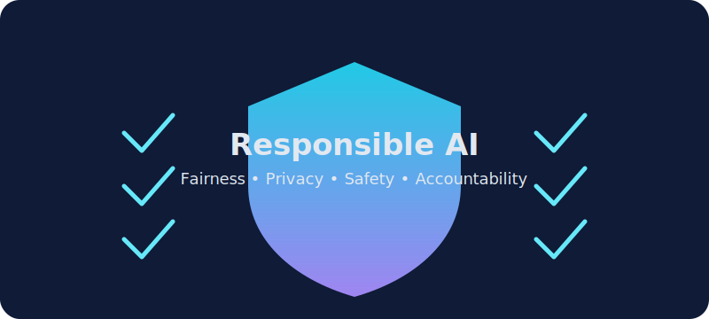

Basics

Comprehensive history across 4 eras, modern applications in healthcare/finance/education, current technologies, benefits, challenges, and future outlook.
Explore AI from history to modern applications. This site covers four major eras of AI development, current technologies in use today, types of AI systems, and a full quiz to test your knowledge.

AI is now embedded in daily life: search ranking, social media feeds, fraud detection, translation, navigation, medical diagnosis support, and classroom tools all use AI techniques.
Real-world impact:
Comprehensive history across 4 eras, modern applications in healthcare/finance/education, current technologies, benefits, challenges, and future outlook.

Narrow AI (what exists today with examples), AGI (theoretical human-level AI), ASI (speculative superintelligence), plus risk analysis for each type.

Interactive glossary with 12 key terms: AI, ML, Deep Learning, NLP, Computer Vision, Generative AI, and more. Click to expand definitions.
Powerful AI systems should be designed to be fair, transparent, private, and accountable. Technical performance is important, but social impact matters too.
